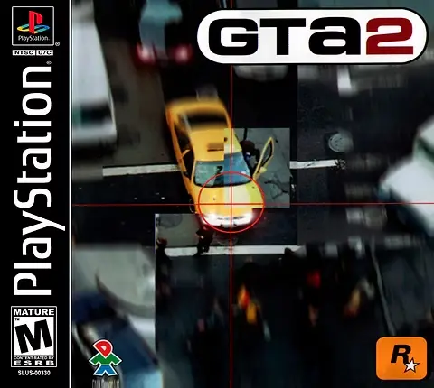

Desenvolvedora: DMA Design (Rockstar North)
Editora: Rockstar Games
Lançamento: 1999
Gênero: Ação / Mundo Aberto
Modos de Jogo: Single-player
O último grande suspiro da perspectiva clássica "top-down" (visão aérea) antes da franquia migrar para o 3D. Ambientado em uma metrópole retro-futurista chamada "Anywhere City", GTA 2 trouxe uma jogabilidade mais refinada, gráficos 2.5D mais detalhados e um sistema de iluminação dinâmica (anoitecer/amanhecer) que dava um tom sombrio e caótico ao jogo.
Você é Claude Speed, um criminoso que acaba de sair da prisão criogênica. Sem lealdade a ninguém, seu objetivo é simples: dominar o submundo do crime jogando as gangues umas contra as outras. Você deve acumular dinheiro suficiente para comprar sua passagem para os próximos distritos, ascendendo na cadeia alimentar do crime.
A liberdade é total. Além das missões principais (telefones tocando), o jogo está cheio de colecionáveis (GTA 2 Tokens), desafios de "Kill Frenzy" e áreas secretas para explorar nos três grandes mapas (Downtown, Residential e Industrial). Tentar manter o respeito máximo com todas as gangues ao mesmo tempo é um desafio para poucos.
Para salvar seu progresso neste jogo, você pode salvar o arquivo .save usando as opções do emulador que está utilizando. Isso pode ser feito através do ícone 💾 no menu no canto inferior esquerdo da tela. Isso criará um arquivo de salvamento que você poderá carregar 📂 posteriormente para continuar de onde parou.